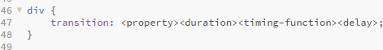
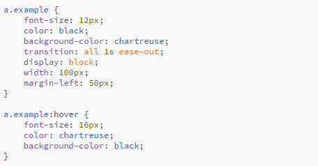
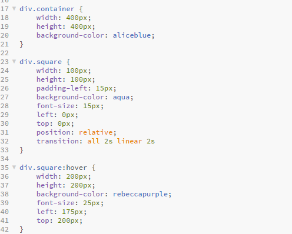

Lesson 11 - Designing, Defining, and Triggering CSS3 Transitions without Custom Libraries (Thought Library)
CSS transitions create a way to control the speed that CSS properties change. This allows us to change things over time instead of having changes take place instantly.
The shorthand syntax is:

- transition-property --> name(s) of properties to which the transition will apply
- transition-duration --> length of time ti takes the transition to complete. This can be one duration for the whole transition or can be broken down into different speeds for different properties
- transition-timing-function --> Determines how transition progresses from start to finish
- ease
- ease-in
- ease-out
- ease-in-out
- linear
- step-start
- step-end
- steps(#, start|end)
- cubic-bezier(#,#,#,#)
- transition-delay --> determines how long until the transition starts
The most common use for a transition on a webpage is changing the color or size of an option when the mouse hovers over it. Try hovering over these two menu links to see a transition at work. We can do this using the :hover state. We don't need any javascript to trigger this transition, just HTML and CSS.
Home Next LessonThis is what the CSS code looks like for this commonly used transition:
Transitions are a good fit for anything that moves between two states. Here is another example of a square that changes color, size, and position on :hover. I have set this one up with a 2 second delay so you can see the difference. Be sure to hover for at least two seconds to see the transition. As soon as you stop hovering the transition stops and returns to its original state.
CSS for square transition:
